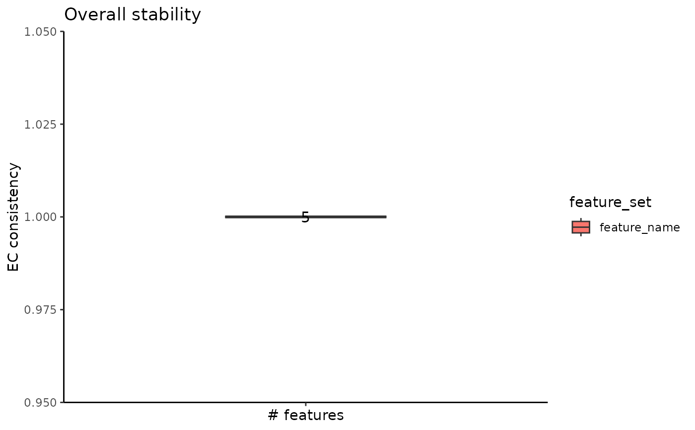

R/stability-1-dim-reduction.R
assess_feature_stability.RdEvaluate the stability of clusterings obtained based on incremental subsets of a given feature set.
assess_feature_stability(
data_matrix,
feature_set,
steps,
feature_type,
resolution,
n_repetitions = 100,
seed_sequence = NULL,
graph_reduction_type = "PCA",
ecs_thresh = 1,
matrix_processing = function(dt_mtx, actual_npcs = 30, ...) {
actual_npcs <-
min(actual_npcs, ncol(dt_mtx)%/%2)
RhpcBLASctl::blas_set_num_threads(foreach::getDoParWorkers())
embedding <-
stats::prcomp(x = dt_mtx, rank. = actual_npcs)$x
RhpcBLASctl::blas_set_num_threads(1)
rownames(embedding) <- rownames(dt_mtx)
colnames(embedding) <- paste0("PC_", seq_len(ncol(embedding)))
return(embedding)
},
umap_arguments = list(),
prune_value = -1,
clustering_algorithm = 1,
clustering_arguments = list(),
verbose = FALSE
)A data matrix having the features on the rows and the observations on the columns.
A set of feature names that can be found on the rownames of the data matrix.
Vector containing the sizes of the subsets; negative values will be interpreted as using all features.
A name associated to the feature_set.
A vector containing the resolution values used for clustering.
The number of repetitions of applying the pipeline with
different seeds; ignored if seed_sequence is provided by the user. Defaults
to 100.
A custom seed sequence; if the value is NULL, the
sequence will be built starting from 1 with a step of 100. Defaults to
NULL.
The graph reduction type, denoting if the graph
should be built on either the PCA or the UMAP embedding. Defaults to PCA.
The ECS threshold used for merging similar clusterings. We
recommend using the 1 value. Defaults to 1.
A function that will be used to process the data
matrix
by using a dimensionality reduction technique. The function should have
one parameter, the data matrix, and should return an embedding describing the
reduced space. By default, the function will use the precise PCA method with
prcomp.
A list containing the arguments that will be passed
to the UMAP function. Refer to the uwot::umap function for more details.
Argument indicating whether to prune the SNN graph. If the value is 0, the graph won't be pruned. If the value is between 0 and 1, the edges with weight under the pruning value will be removed. If the value is -1, the highest pruning value will be calculated automatically and used.
An index indicating which community detection
algorithm will be used: Louvain (1), Louvain refined (2), SLM (3) or
Leiden (4). More details can be found in the Seurat's
FindClusters function.
A list containing the arguments that will be
passed to the community detection algorithm, such as the number of iterations
and the number of starts. Refer to the Seurat's FindClusters function
for more details.
A boolean indicating if the intermediate progress will be printed or not.
A list having one field associated with a step value. Each step contains a list with three fields:
ecc - the EC-Consistency of the partitions obtained on all repetitions
embedding - one UMAP embedding generated on the feature subset
most_frequent_partition - the most common partition obtained across repetitions
The algorithm assumes that the feature_set is already sorted when performing the subsetting based on the steps values. For example, if the user wants to analyze highly variable feature set, they should provide them sorted by their variability.
set.seed(2024)
# create an artificial expression matrix
expr_matrix <- matrix(
c(runif(100 * 10), runif(100 * 10, min = 3, max = 4)),
nrow = 200, byrow = TRUE
)
rownames(expr_matrix) <- as.character(1:200)
colnames(expr_matrix) <- paste("feature", 1:10)
feature_stability_result <- assess_feature_stability(
data_matrix = t(expr_matrix),
feature_set = colnames(expr_matrix),
steps = 5,
feature_type = "feature_name",
resolution = c(0.1, 0.5, 1),
n_repetitions = 10,
umap_arguments = list(
# the following parameters are used by the umap function
# and are not mandatory
n_neighbors = 3,
approx_pow = TRUE,
n_epochs = 0,
init = "random",
min_dist = 0.3
),
clustering_algorithm = 1
)
plot_feature_overall_stability_boxplot(feature_stability_result)
